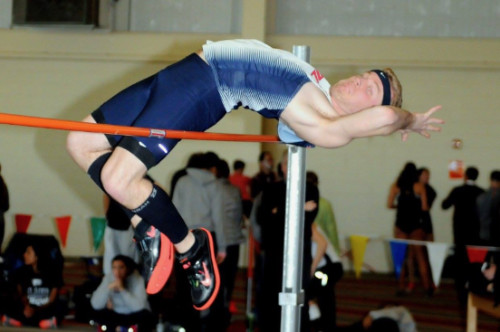

Interests
Interests
Running
Running is a passion I built on when I was 13. I have 10 years of competitive experience in track & field, competing as high as the collegiate level in the NCAA Division. My main event was high jump. To the right is my successful attempt at jumping over 1.85 meters.

Photography and Editing

Photography is an everyday thought. I push the boundaries between mobile photography and dedicated camera photography, capturing moments with family & friends, landscapes, portraits, and everything in between. I continue to improve my shooting capabilities and editing skills. You can go to my Photo Gallery to check out some of my work!
Coffee
I am a self-proclaimed Caffeine Mixologist. I have traveled the world and honed my skills in different forms of cultural brewing methods, ranging from the traditional mixture of espresso and steamed milk known as the Italian Cappuccino to the fifth-ranking-in-the-world coffee from Honduras. My favorite morning activity is to test different brewing methods; my favorite brew method is pour-over.